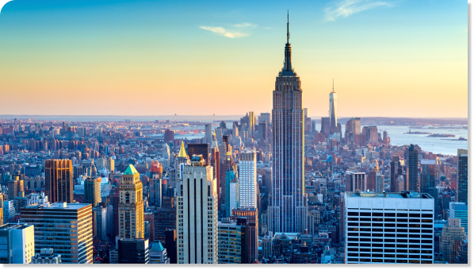
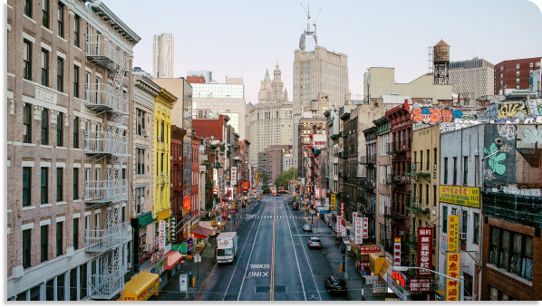

The city seen from the Queensboro Bridge is always the city seen for the first time, in its first wild promise of all the mystery and beauty in the world. F. Scott Fitzgerald
Find Out More

Skyline
Here is a list of our favorite quotes about the New York skyline- "I would give the greatest sunset in the world for one sight of New York's skyline."Ayn Rand, The Fountainhead
- "That skyline -- the apotheosis of New York's grace and swagger, creativity and hard labor-- is lovelier to me than the most serene sunset or snowcapped mountain range."Maureen Corrigan, Leave Me Alone, I'm Reading
- "There's a swell when you first see Manhattan. It's true, you think, the skyline is not a mirage, and you can be inside of it, naked in that gold light." John Weir, What I Did Wrong

Streets
For those of you who are interested in NYC slang, start taking notes below on these words that every New Yorker should know and learn.- "I would give the greatest sunset in the world for one sight of New York's skyline."Ayn Rand, The Fountainhead
- "That skyline -- the apotheosis of New York's grace and swagger, creativity and hard labor-- is lovelier to me than the most serene sunset or snowcapped mountain range."Maureen Corrigan, Leave Me Alone, I'm Reading
- "There's a swell when you first see Manhattan. It's true, you think, the skyline is not a mirage, and you can be inside of it, naked in that gold light." John Weir, What I Did Wrong